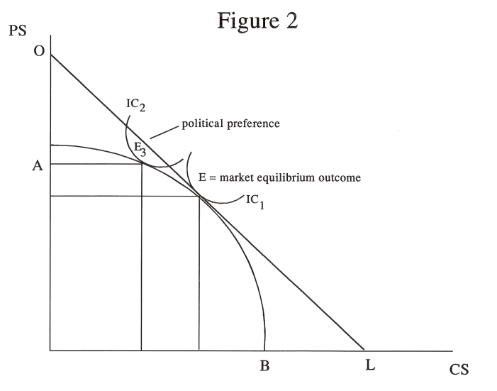
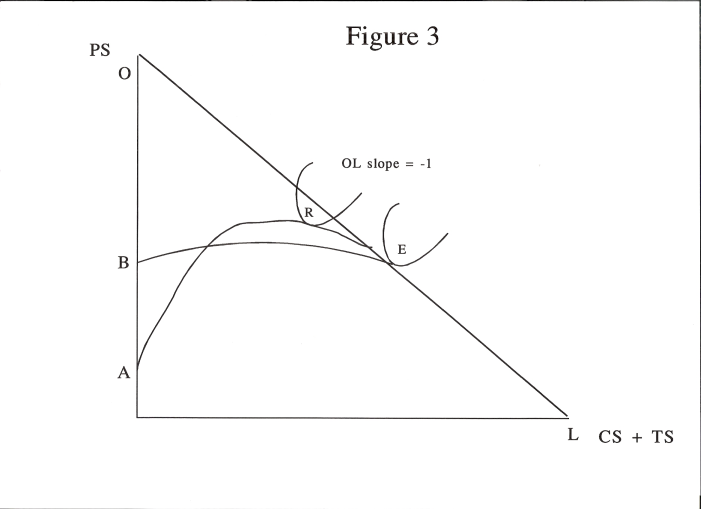
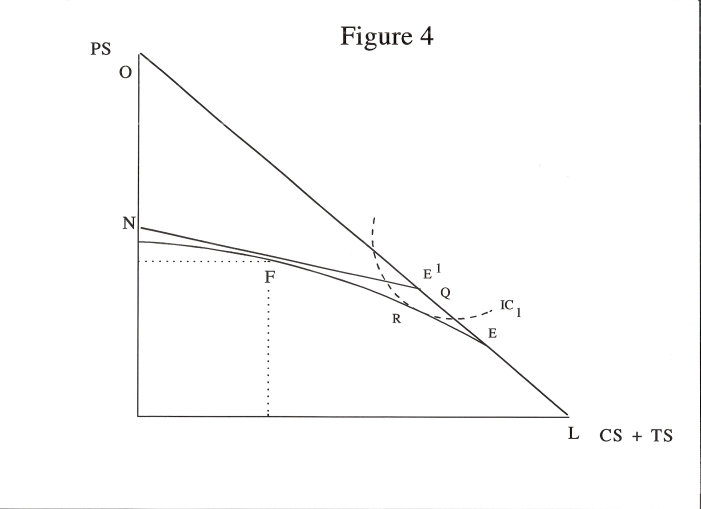

by R.W.M. Johnson
There is increasing recognition of the role of interest groups in political decision making and the relationship between the elected representatives and their constituents. Recent literature emphasises collective decision making as a bargaining process with the results depending on the respective power bases of the participants and the game strategies each might follow. The political power approach involves quantifying the relative political power of each party. These approaches need to be examined against the role of political institutions and constitutions in collective decision making. Adherents to these views claim that collective decision making is an inherently complex process that involves threats and counter-threats, compromises, coalitions, levels of disagreement and path dependence. This paper surveys these writings and suggests some applications to Westminster political systems and further research.
In a previous paper (Johnson 1994) I set out recent changes in administrative and public choice theory as they affected recent agricultural policy in New Zealand. In this paper I want to examine further some of the collective decision making models in the literature and relate them back to the more practical aspects of policy administration previously examined. More specifically, I examine political preference functions, Rausser's recent work on treating the political bargaining process from the point of view of game theory; Zusman's work on modelling the political process, and Bullock's recent critique of political preference functions (Rausser et al 1994; Zusman 1994; Bullock 1994).
I first discuss public choice and interest group theory as it affects public policy making and then go on to defme the role of constitutions and institutions. Collective decision making refers to the political process and how it works and this is discussed next. I then summarise the role of political preference functions and some of the limitations they exhibit. The game theory approach to decision making is then discussed and its applicability assessed. The basic objective throughout is to examine how the literature models apply or might apply to open trading, primary export producing and Westminster governed countries like Australia and New Zealand.
It is important to clarify at the start that the models discussed in the literature are mostly based on the US economy and constitution. The important point is that the constitution of a country sets the general rules for economic and political behaviour and it is not much use looking for inspiration when the some of the conventions are different in the first place. Following Quiggin (1987) we should expect some deviations from the theory in applying it to our constitutional model and its modifications (Westminster government, state systems of representation, MMP etc.).
The experts distinguish between upper and lower (operational) constitutional rules (Johnson 1991, p.341). The upper constitutional rules refer to the major institutions of a society; the structure of government institutions and the system of law. These rules change very infrequently and require major upheavals or considerable consultation and politicising to make changes. Their importance is that they provide a long term frame of reference for political and economic decision making.
At the lower level, are the political and economic institutions which are changed or adjusted by the policy making process. These include provisions for administrative systems. These rules are of a more transitory nature, subject to political and pressure group influence, but nether-the-less are the rules for the moment in making decisions.
2
The total area of political and economic decision making is referred to as the political market. In parallel with private markets, deals are made, trade-offs exist, costs and benefits have a place, and 'efficient' policy solutions can be identified. To simplify the complexities of such a market, the market analysis tends to focus on the role of interest groups and their behaviour. In this model, interest focuses on the role of government, the role of the bureaucracy, and the role of private interest groups. Self-interest is assumed to motivate all three groups and policy solutions tend to reflect the power base of each in the political process.
In the case of the leading US public choice theorists there is an underlying constitutional principle relating to individual freedom. The rights of the individual are regarded as paramount and government institutions are seen as vehicles designed to serve such basic rights and not vice versa. It follows that Government intervention should be minimised in this view consistent with protecting the rights of individuals including the weak, the defenceless and the poor. This contrasts with the Westminster system where government is seen to be paramount and the rights of individual are weaker. This particularly affects the views of economists in the bureaucracy who see it as their role to support Ministers and the parliamentary process and tend to over-rule the rights of the individual in their policy prescriptions.
In contrast to the above description, some writers see government activity as more altruistic; the decision makers are seeking some goal identified as the 'public interest' and that the role of pressure groups is less important. Martin (1989, 1990) and Johnson (1994) have recently discussed this issue in the Australian and New Zealand contexts respectively.
In pursuing the private interest approach, several authors have endeavoured to quantify the observed bias in agricultural policies towards some groups in society by deriving a political preference or governing criteria function (PPF). This approach assumes that current policies reflect a political economic equilibrium summarising all the relevant forces. It acknowledges the influences of political agents and groups in the policy process by the assumption that an abstract policymaker maximises a weighted objective function subject to economic restraints. The weights or 'policy preferences' are seen as the outcome of the political decision making process (Swinnen and van der Zee 1993).
In technical terms, PPF studies attempt to measure interest group 'success' by measuring marginal rates of transformation along a Pareto frontier. Transformation curves are theoretical constructs that show the trade-off between interest groups (in terns of producer and consumer welfare) when a political instrument is changed, all other instruments held constant (Bullock 1994, p.352). It would be expected that the trade-off is one of diminishing returns and hence the curve would be concave to the origin. Tangency with a convex political preference function would identify a Pareto optimum. The implications of these constructs are discussed further below.
Another approach is to regard interest groups as parties to a two-person bargaining game. The solution to the bargaining game can be regarded as the point in the bargaining set which maximises the product of the players' utility gains from cooperation. Recent work has focussed on prescriptive analyses of the underlying choice rules and institutional design that structures the policy making process. These models represent politics as a process by which competing interest groups negotiate a compromise agreement that reflects their relative bargaining strengths (Rausser, Simon and van't Veld 1994). The implications of these are also discussed below.
3
In the following paragraphs I examine the Zusman, Bullock and Rausser et al positions in more detail and try and assess their relevance to Westminster type systems of government. As Swinnen and van der Zee point out (1994, p.266), PPF analysis is not greatly different to the conventional benevolent, omniscient view of government. The difference is the recognition of differing interests in society that receive different rewards ('weights') in the political-economic decision making process. The abstract policy maker is an artificial concept to circumvent the modelling of the political market. Zusman attempts to overcome such criticism by modelling the bargaining process among pressure groups and the policy maker while Rausser et al develop a multilateral strategic bargaining model with constitutional implications. The work of Bullock is important as it demonstrates certain areas where the PPF assumptions are no longer valid.
It can be hypothesised that agricultural policy makers have a welfare function which includes social welfare weights for the three groups of people involved and can be written as,
W = wp Gp + wc -wt Lt
where wp Wc and Wt are the weights for producers, consumers and taxpayers respectively, and Gp, Gc and Lt are the respective welfare effects of the programme in terms of producer surplus, consumer surplus and loss to taxpayers. In the case of a support price policy, for example, the government or central decision maker makes a determination (from whatever point of view and with whatever information that is available) that involves an implicit weighting of welfare gains by producers and consumers and taxpayer loss. In Figure 1, the loss to taxpayers is equal to the sum of Gp and Gc plus the area ABE which is the dead-weight loss (DLt. Thus the welfare function can be written in the following way.
W = (wp - wt)Gp + (wc -wt)G - wt DLt,
and the shares of the interest groups are represented in Figure 1 by,
Po EAPs = Gp = welfare gain for producers
Po EBPd = Gc = welfare gain for consumers
Ps ABPd = Lt = welfare loss for taxpayers
EAB = DLt = dead-weight loss.
4
Estimates of the welfare weights are obtained by maximising W with respect to the policy variable. In this simple case, arbitary values can be given to two of the weights and estimate the relative value of the third. Assuming government attaches equal importance to consumers and taxpayers, the welfare function simplifies to,
W = (wp - 1)Gp - DLt.
Assuming linear forms of the supply and demand equations, this function can be written as
W = (wp - 1)Ps - Po)(Qs - + Qo)1/2 = (Ps - Pd)(Qs - Qo)1/2With further manipulation it can be shown that,
wp = 1 + (b(Ps - Pd))/Qs where b = slope of supply function
or
wp = 1 + (E (Ps - Pd))/Ps
where E = elasticity of supply.
The producer and consumer prices are observable and the elasticity of supply can be estimated. Therefore the implicit weight used by policy makers for producers relative to that of taxpayers can be estimated. If it is assumed that producers and consumers are of equal significance, wp can be expressed in terms of the producer's price and the true market price,
wp = 1 = (E (Ps - Po)/Ps
In both cases when producer and consumer prices are the same, as at the intersection of the supply and demand curves, wp becomes equal to unity. Thus an absence of intervention can be interpreted as indicating that the government assigns equal significance to the three groups.
5
Figure 2 shows the assumed surplus transformation curve (STC), AB, between producers surplus and consumers surplus as government policy changes. OL is the price line of slope -1. IC1 is the government's indifference curve at the the market equilibrium outcome, E. The weights equal 1 at this point. The size of the producer surplus and the consumer surplus is the same as in the market solution in Figure 1. In the case of a support price, the government has moved on to indifference surface IC2 with equilibrium at Es. There is a gain for producers and a loss for consumers and taxpayers. The indifference curves represent the political preferences involved and the transformation curve represents the opportunities for trade-offs between consumers and producers welfare when intervention takes place. Only one policy instrument (a support price) is involved.
Figure 3 shows the case where two policy instruments (not mutually exclusive) are involved in finding the maximum welfare surplus (after Alston and Hurd 1990). Curve AE shows the distribution of total surplus with a single instrument eg a production control alone. Curve BE shows the distribution for a second instrument eg an output subsidy. The concavity of the curves reflects the increasing deadweight loss relative to farmer benefits as transfers away from consumers/taxpayers increase. Point E shows the two curves meeting at a point where either policy gives the same distribution of welfare. This identifies the point of competitive equilibrium and equal weights.
The government's political preferences will be represented by an indifference curve between different producer and consumer surplus (plus taxpayer surplus) outcomes and could, say, be represented by point R, where the MRS equals the MR T(from IC2). A production control alone is at a higher level of welfare than an output subsidy. Alston and Hurd show that a mix of policies may be most optimal if dead weight losses are taken into account.
Figure 4 shows this result. The 45 degree line, OL, has slope of -1 and indicates that a dollar of subsidy costs a dollar of taxpayer's money. Now moving from point R to point E' could increase welfare by combining a subsidy with a production control Any transfer along OL can be obtained without any distortion in resource use as the equivalent of a lump sum transfer. OL is an efficient STC according to to Alston and Hurd. Two instruments are better than one in defining an efficient solution.
The authors then introduce the impact of the dead-weight cost of the subsidy payments so that a dollar of subsidy costs (1 + d) dollars of taxpayer surplus. The slope of this line will be less
6
than OL and is shown as NQ in Figure 4. With output fixed at the competitive quantity, NQ is the new STC. The best combination of the two instruments would be at point F. Only at point R would a production control alone be superior.
The importance of this analysis is that it moves beyond Gardner's (1987) construct where he only varied one instrument at a time (Bullock 1994, p.352). The estimation of the Pareto frontier must allow for a multiplicity of instruments as actual experience would suggest.
The model outlined above is directly utilised by Lianos and Rizopoulos (1988) in a study of Greek cotton. Due to relatively small local production Greece is a price taker. Since the market price is determined independently of the support price, no consumer gain is created by government intervention. In terms of Figure 1 the welfare gain for producers is Po EAPs, for consumers is zero, and the loss for taxpayers is PsAB'Po, with a dead-weight loss of EAB'.
Utilising an estimate of the short-run elasticity of supply of 0.84 they calculate yearly estimates of wp using yearly values of Ps, Po and Qs. During a the period of local intervention the average value of the distributional weight was 1.098 and during the period under the CAP, the average value was 1.202. These results are interpreted as a 9.8 per cent preference for farmers relative to taxpayers during the first period and a 20 per cent preference for farmers in the second period. In effect, the weight in this PPF study represents the percentage increase in the area of producers surplus following intervention.
Gardner (1987) uses the PPF framework to develop a priori theoretical expectations about the effects of changes in supply and demand elasticities on government intervention. He tests empirically whether actual intervention reacts to changes in supply and demand elasticities in a manner consistent with theoretical expectations. He considers two interest groups, producers and consumer-taxpayers, and two policy instruments, a target price and a production quota. In his comparative statics he allows government to use one instrument at a time, thus constraining his analysis to one or other of the two STCs involved rather than the Pareto frontier implied by simultaneous instrument use (Bullock 1994, p.352).
An early study of PPF was that of Rausser and Freebairn (1974). They derived a PPF for US beef import quotas which gave the first estimates of the preference weights. These authors
7
derive an econometric model to define the slope of the policy possibility frontier between their consumer welfare measure, aggregate consumer meat costs, and producer welfare, aggregate beef producers' gross margin. Their results suggest that over the period 1959-1969 policy makers weighted a two dollar increase in beef producer returns as approximately equivalent in social value to a one dollar increase in consumer meat costs.
The US wheat sector was analysed by Oehmke and Yao (1990) who estimated a PPF with public research expenditure, target prices, and sales from government stocks as policy instruments in a dynamic setting. Given observations on actual values of target prices, government sales and research expenditures, their model can be viewed as a system of six equations with six unknowns, the unknowns being the relative weights the government places on each category of surplus included (ibid, p.635). The consumers' surplus weight was 0.46 for 1977 and the producers' surplus weight for 1977 was 1.43 relative to government expenditure. They found a considerable decline in weights for agricultural producers relative to consumers, comparing 1984 outcomes with those of 1977. These changes are consistent with claims that agricultural producer groups lost political power relative to consumer groups during the late 1970s and early 1980s (ibid, p.637). The results place an 80 per cent premium on wheat producers' surplus relative to wheat consumers' surplus and that government values consumers' surplus at approximately 50 per cent of the value of budget savings.
Oskam and von Witzke (1990) also examine the US wheat sector for the period 1981-1990 following an earlier study of Oskam (1988) of the EC dairy sector for the period 1984-1988. These authors model the problem with a cost minimisation objective function and solve it by ordinary LP methods. This procedure allows a greater range of policy changes to be investigated and surpluses identified before the average weights are estimated. For the EC dairy study, Oskam found weights for producers' income just below unity and weights for consumers' income below 0.5 relative to EC budget costs. For the US wheat sector, Oskam and von Witzke found the weight on producers' income to be 1.02 and that on consumers income O.7 relative to budget expenditures.
According to Swinnen and van der Zee (1993), PPF studies of industrial economies indicate that weights attached to agricultural producers exceed unity, while those for taxpayers are below zero. Producer weights are highest in W Europe and Japan, although traditional exporters also distort their domestic markets (Tyers 1990, p.1411).The pattern of weights is similar in most industrial countries and in many developing countries although the variance of the wights differs greatly.
Some studies have applied the calculated weights to the analysis of the political feasibility of alternative agricultural reform programmes. Other studies focus on the endogenous deternination of policy instruments such as prices, deficiency payments, import quotas and the like (Swinnen and van der Zee 1993, p.265).
Swinnen and van der Zee (following Rausser and Freebairn 1974, p.439) point out that there are three possible approaches to obtaining the weights of a PPF; a direct approach by interviewing policy makers, an indirect approach from examination of the results of actual decisions ('revealed preference'), and an arbitrary approach, in which the researcher chooses weights according to his own beliefs. The indirect approach is used most often and infers weights using the PPF's first order conditions. Presumably political decision makers could be
8
approached with some sort of structured questionaire that revealed the general direction of their preferences. At the wider level, political commentators continuously analyse attitudes and decisions and forecast likely outcomes.
The approach still relies on the government as the final arbiter and decision maker. In this sense, the function does not 'explain' political decision making, it merely examines the end result. The estimation of producer and consumer surplus relies on the underlying model of the market to establish a first position or reference point.
The nature and number of arguments that can be included in a PPF is, in principle, unlimited. Usually the same interest groups as used in welfare economics is employed. In practice, PPF researchers must aggregate or omit some interest groups, ignore the availability of some policy instruments, and use simplified econometric models of markets (Bullock 1994, p.349).
The approach can have some interesting results. Rausser and Foster (1989, 1990) use it draw their distinction between wealth distributing measures and wealth increasing measures. They argue that PPF studies have focussed on policies that create dead weight (in their terminology 'PESTS') to the neglect of policies that 'expand the size of the economic pie' ('PERTS'). They make the important point that some PERTS do in fact make some groups worse off as in the case of government support for research. Producers acting as a coalition may obstruct the implementation of the public good or PERT unless they are compensated in some form. One form of compensation would be to introduce a redistribution measure (a PEST) which transfers some wealth resulting from the new PERT equilibrium to producers. This transfer of wealth may actually be the means of of securing the welfare increasing policy even though it may appear as an inefficient rent-seeking based policy (1990, p.641). This thus raises a wider concern that political decision-making is not a simple matter of trade-offs between pairs of policies but rather a whole complex of existing, new and interacting policies.
Zusman particularly wants to take account of the interests and political power structure of participants in the policy process. He maintains that given the economic structure, interest groups' and policy makers' objectives and the political power structure, policy choices should be fully and uniquely determined. Inefficient existing policies could actually be improved within the existing power structure. Delays in policy updating will yield outdated and inefficient policies. Changes in the political power structure are likely. Policy changes which yield benefits whose distribution is consistent with the prevailing power structure have a better chance of being adopted. The task is to carry out a proper analysis of the political power structure in order to quantify the relative political power of all participants (Zusman 1994).
The values of endogenous policy variables are determined by the economic structure chosen. He assumes that there is a policy making centre that is constitutionally authorised to select the values of the policy instruments. The values of the endogenous variables affect all the participants in the political economy. Individual participants having similar preferences over the set of feasible policy instruments are grouped into interest groups. Interest groups are assumed to have leadership capable of mobilizing the group's resources and coordinationg the actions of group members. The groups' leaders can enter into binding agreements with other organised interest groups and policy making centers. The feasible set of policy instruments to
9
be chosen will be constrained by certain conditions (prices must be non-negative, and unacceptable policy instruments are excluded). The exact choice of instruments is determined by a bargaining game involving the policy making center and the organised interest groups.
The objective function of the policy making center includes the center's perception of the power or strength of the organised interest groups on central policy makers, and the groups' evaluation of the costs of employing its means of power. The objective function of the interest groups reflects individual gains subject to the costs involved. The bargaining game determines the maximisation of the policy governance function with power coefficients showing the relative power of each interest group.
In discussing the power structure, Zusman reverts to constitutional position. What is important are the shared values and beliefs concerning the laws controlling the functioning of the social and political environment. These allow power bases to be built and political commitment to be identified. Trends in ideology determine whether decision making is centralist or free market oriented. Groups will be affected by the distribution of wealth in a particular society. Producer groups are stronger than consumer groups. Successful groups will be well organised groups.
Concentration of membership is better than dispersed membership and so on.
Zusman says that the power coefficients are crucial determinants of policy choices. It could be that the conditions determining the size of the power coefficients should be changed. Political institutions, including especially constitutional arrangements, written or tacit, determine the present distribution of power. Intervention at the institutional level may be more effective in changing welfare if previous bargaining has little result. This accords with the conventional view of upper and lower (operational) constitutional rules and their part in policy determination.
Rausser et at (1994) show the connection of this model to the Nash solution for a two:-person bargaining game. There are two stages to the bargaining game. In the first stage, according to Rausser et at, players non co-operatively determine what actions they will threaten the other player with if no agreement is reached in the second bargaining stage. The exogenous disagreement point in Nash's original model thereby becomes an endogenous threat point where each of the players pursue threat strategies. This formulation was generalised by Harsanyi to the n-person bargaining game and was employed by Zusman to derive his governance function. This governance function represents a political-economic system as a weighted sum of a single policy makers and possible multiple interest groups' utilities, where the weights reflect the interest groups' relative power over the policy makers. The solution to the Zusman model is obtained }. by maximising the governance function.
Zusman and Amiad (1977) use the model to analyse the Israeli dairy program 1968-69. The conditions assuring the existence and uniqueness of a solution to the problem depend on the set of constraints in a programming problem. Endogenous variables are determined by structural equations. The policy instrument levels are determined by the observed political relations between groups in the system. These instrument levels and power weights are then derived from the programming solution. The authors stress their predictions of the policy instruments more than the derived power weights which tend to vary about unity. Additional constraints are modelled (raising the production quota) to improve the estimates of instrument levels.The latter adjustment raises the power coefficient for family farms ('moshav') compared to cooperative farms ('kibbutz'). Apparently, moshav farms were in favour of restrictions on imports and raising domestic production!.
10
In Rausser's multilateral model, constitutional variables (the rules for making rules) must be specified as part of the description of the problem. Comparative statics can be applied to obtain insights in to the relative merits of alternative constitutional designs. In the Harsanyi-Zusman framework the key constitutional variables are embedded in the endogenously determined governance function weights and the effect on these weights of changing the constitutional rules cannot be directly tested.(ibid p.7).
In a recent survey, Sexton (1994, p.195) distinguishes between the cooperative and non co-operative game theory models of bargaining. Zusman's model follows the cooperative game theory literature and specifies features that a solution should entail and then determines the types of solutions, if any, that satisfy pre-determined outcomes or axioms (Rausser et al. 1994, p.1).
Rausser's multilateral model derives from non-cooperative game theory and models constraints on the decision making process itself and predicts outcomes by determining the equilibrium non co-operative strategies of decision makers facing those constraints.
Beghin's (1990) model utilises cooperative game theory as well as posing behavioural equations. This study stresses the interdependence between policies and player's bargaining strengths and derives their comparative statics with respect to a changing economic environment. From the possible cooperative game solution concepts, the reference point solution was chosen for the study. Reference points are payoffs players refer to when they evaluate payoff proposals. It is assumed that the payoff set and its frontier change with the economic environment. Players' payoffs, bargaining powers, and equilibrium strategies are changed by exogenous shocks. The power weights in the solution represent the the bargaining-power coefficients of the players; and are equivalent to the weights of the objective function of revealed preference. In an example drawn from the economy of Senegal, the power weight for farmers was 0.59; that for urban consumers 0.13, and that for the marketing board/government was 0.27 (these are normalised coefficients summing to unity). Farmers are strong bargainers in setting local commodity prices as they have subsistence crops to fall back on. Consumers and government have more to lose in case of disagreement and hence fare less well than would be expected under price policies favouring urban consumers and the marketing board.
This model is applicable to a wide range of political-economic problems especially prescriptive analyses of the underlying collective choice rules (the constitutional space) and institutional design that structures the policy making process. The approach models constraints on the decision making process itself and predicts outcomes by determining the equilibrium non co-operative strategies of decision makers facing those constraints. In this way crucial features of collective decision making are accommodated. Collective decision making is an inherently complex process that involves threats and counter-threats, compromises, coalition formation, multiple levels of disagreement and path dependencies (Rausser et al 1994).
The model represents politics as a process by which competing interest groups negotiate a compromise agreement that reflects their relative bargaining strengths. The bargaining game is generalised to a multidimensional issues space with multiple players. There is a fixed finite number of negotiating rounds. It includes a set of admissable proposals and a set of admissable coalitions. The set of admissable proposals might include an interval representing alternative settings of some policy variable or the admissable set could represent a package of policy instruments that are being negotiated simultaneously. The set of admissable coalitions includes any sub group of the players that together have the political power to implement a proposal -
11
(e.g. in a strict majority rule regime any group containing a strict majority of the players would be admissable). If one or more players have de facto veto power over the negotiations, then any admissable coalition would have to include those players.
In the first round of negotiations, each player submits a proposal from the set of admissable proposals and selects a target coalition from the set of admissable coalitions. One of these proposals is then selected at random according to an exogenously specified vector of access probabilities and put to the selected coalition for a vote (the higher a players relative political power the greater will be that player's access probability). If all members of the coalition accept the tabled proposal then the game ends. If one or more parties rejects it then play proceeds to the next round. Equilibrium is where each party essentially tables the same proposal to their mutual satisfaction.
The constitutional variables are specified as part of the description of the problem and hence can be varied accordingly. In this way, a comparision can be made of simple majority rule versus a two-thirds majority. This in contrast to the Harsanyi-Zusman framework where the key constitutional variables are embedded in the endogenously determined governance function weights.
Rausser et al then discuss their Bulgarian case study as an example of their multilateral model. The groups represented are the former ruling elite, producers, and 'the center' which wishes to maximise social welfare. The elite have a rent in the old system which is diminished by the reform process. Producers expect to gain from economic reform while the centre wants the best from both worlds. The three interest groups negotiate with each other to determine the character of the transition. The outcome of their negotiations is reflected in a policy variable representing the deviation between consumer and producer prices in the market. The rent from such a distortion goes to the elite, reducing consumer and producer surplus and creating dead weight loss. In effect the distribution of this variable determines the distribution of political power in the post reform governance structure which in turn determines the level of distortion in the postreform economy.
Bargaining reflects the relative political power of each group and the result could speed up or slow down the process of reform. The elite control the supply of human capital and too fast a reform lowers economic productivity. Each interest group has to negotiate a path of reform which will take it near the center position as neither extreme can be tolerated politically.
Rausser's other examples include (as yet not sighted) a model to analyse the negotiations between agricultural water users, urban water agencies and environmental groups in California; a study of political alliances, negotiations and performance in the context of agricultural environment policy; and the above study of the political economy of agrarian reform in transition societies (Rausser et al 1994, p.7).
PPF and bargaining models seek to simulate the economic-political process and explain some of the factors which influence actual political policy decisions. PPF models examine the end results of the political process in terms of social welfare surplusses. They accept the central altruistic view of government maximising the national interest from its point of view and can provide estimates of how much an interest group may have benefitted from a given decision.
Bargaining models go one step closer to the political process and examine the relative power
12
of the groups involved in the decision making process. Recent bargaining models set out a wide range of constraints on, and opportunities for, bargaining between interest groups, which more narrowly define the political compromise which will satisfy the parties. These models have a particular advantage in simulating constitutional changes which will bring differing parties together.
PPF models derive weights which measure changes in welfare surpluses. Different models incorporate a wide range of policy instruments and their effects on welfare distribution. The estimation of weights is a relatively simple procedure, but the specification of the underlying model is complicated. Econometric and LP methods are employed. The LP studies of Oskam show the incorporation of a detailed list of policy changes which econometric methods do not handle well. Weights can be derived for single years or for an average of years. All models rely on econometric estimation of a 'normal' reference point from which to calculate the social surpluses.
At the end of the day, PPF studies demonstrate to policy makers that the welfare surpluses have increased or decreased and by how much. It would appear that policy analysts could probably advise decision makers of the direction if not the arithmetic magnitude of the surpluses from standard welfare policy models. A well-organised economic secretariat could probably have in-house models in active preparation that could supply further details of direction and amount to decision makers.
PPF models do not seem constrained by any particular country orientation and have been published for a number of countries and products mostly in developed countries. They appear to be a feature of the agricultural economics literature in particular though no doubt their methodology applies to other industries and avenues of government expenditure wherever there are transfers from one group to another.
Bargaining models do start to examine the behaviour of the agents involved. Policies are the result of an optimisation game between rational actors who have all the information relevant for the game. This assumption may not be realistic. The relative power of the bargaining groups is crucial to the outcome. If agreement between agents can be reached then some kind of political efficiency is achieved by the process.
The cooperative game theory models of Zusman and Beghin are rich in detail even though they do not involve constitutional reform alternatives. Rausser's non co-operative game theory models include strategic bargaining and the relevant constitutional reforms. His model of Bulgarian bargaining is perceptive but not particularly instructive for an open primary trading country. The idea of bargaining between interest groups in stages is an appealing one and simulates actual policy making processes in many cases where discussion and re-negotiation are involved. A wide knowledge of the political process is required. Unilateral decision making (by cabinet committee for example) would not be well simulated by a bargaining game, though the decision itself would still reveal the political preferences of the decision makers in some way.
Bargaining models assume a much greater and detailed knowledge of the political and economic framework surrounding a decision or set of decisions. In this sense, they resemble more and more a political science approach to decision making (and indeed could not do without it). This is well summarised by Beghin (1990, p.147):
13
The bargaining game framework incorporates agents' behaviour and reactions into the policy process. Estimated bargaining weights reveal the welfare trade-offs made by policy makers in their policy choices. Assumptions about players' behaviour, technology and preferences are necessary to quantify the game and the policy responses to shocks; adding more a priori structure could possibly bias the analysis. This approach also requires a well-documented understanding of the political economy and institutions involved in policy decisions.
Alston J.M. and Hurd B.H.(1990), 'Some Neglected Social Costs of Government Spending in Farm Programs', American Journal of Agricultural Economics 72(1), 149-156.
Beghin J.C.(1990), 'A Game-Theoretic Model of Endogenous Public Policies', American Journal of Agricultural Economics 72(1), 138-148.
Bullock D.S.( 1994), 'In Search of Rational Government: What Political Preference Function Studies Measure and Assume', American Journal of Agricultural Economics 76(3), 347361.
Gardner B.L. (1987), 'Causes of US Farm Commodity Programs', Journal of Political Economy 95(2), 290-310.
Lianos T.P and Rizopoulos G.(1988), 'Estimation of Social Welfare Weights in Agricultural Policy: The Case of Greek Cotton', Journal of Agricultural Economics 39(1), 61-68.
Johnson D.B.(1991), Public Choice: An Introduction to the New Political Economy, Bristlecone Books, California.
Johnson R.W.M. (1994), 'The National Interest, Westminster, and Public Choice', Australian Journal of Agricultural Economics 38(1), 1-30.
Martin W. (1989), 'Australian Agricultural Policy 1983-88', Paper presented to 33rd Annual Conference of the Australian Agricultural Economics Society, Christchurch.
Martin W. (1990), 'Public Choice Theory and Australian Agricultural Policy Reform', Australian Journal of Agricultural Economics 34, 189-211.
Oehmke J.F. and Yao X. (1990), 'A Policy Preference Function for Government Intervention in the U.S. Wheat Market', American Journal of Agricultural Economics, 72(3), 631-640.
Oskam A.J. (1988), Decision Based Economic Theory, Staff Paper P88-38, Department of Agricultural and Applied Economics, University of Minnesota, St Paul.
Oskam AJ., and von Witzke H. (1990), Agricultural Policy Preferences: Wheat in the United States, 1981-90, Staff Paper P90-68, Department of Applied and Agricultural Economics, University of Minnesota, St Paul.
Quiggin l(1987), 'Egoistic Rationality and Public Choice: A Critical Review of Theory and k Evidence', Economic Record 63(10), 10-21.
Rausser G. and Foster W.E.(1989), 'Political Preference Functions and the Market for Public Policy Reform', Paper presented to 33rd Annual Conference of the Australian Agricultural Economics Society, Christchurch.
Rausser G. and Foster W.E. (1990), 'Political Preference Functions and Public Policy Reform', American Journal of Agricultural Economics 72(3), 641-652.
Rausser G. and Freebairn J.W.(1974), 'Estimation of Policy Preference Functions: An Application to U.S. Beef Import Quotas', Review of Economics and Statistics 56, 437-449.
Rausser G., Simon L.K. and van't Veld K.T. (1994), 'Political Economic Processes and Collective Decision Making', Paper presented to 22nd Conference of International Association of Agricultural Economists, Harare.
14
Sexton R.J. (1994), 'A Survey of Non co-operative Game Theory with Reference to Agricultural Markets: Part 1 Theoretical Concepts; Part 2 Potential Applications to Agriculture', Review of Marketing and Agricultural Economics 62(1,2), 11-28; 183-200.
Swinnen J. and van der Zee F.(1993), 'The Political Economy of Agricultural Policies: A Survey', European Review of Agricultural Economics 20, 261-290.
Tyers R.(1990) 'Implicit Policy Preferences and the Assessment of Negotiable Trade Policy Reforms', European Economic Review 34, 1399-1426.
Zusman P. and Amiad A. (1977), 'A Quantitative Investigation of a Political Economy-The Israeli Dairy Program', American Journal of Agricultural Economics 59, 88-98.
Zusman P. (1994), 'Public Policy for Agriculture: The Role of Constitutions, Institutions, and Political Economy', Paper presented to 22nd Conference of the International Association of Agricultural Economists, Harare.